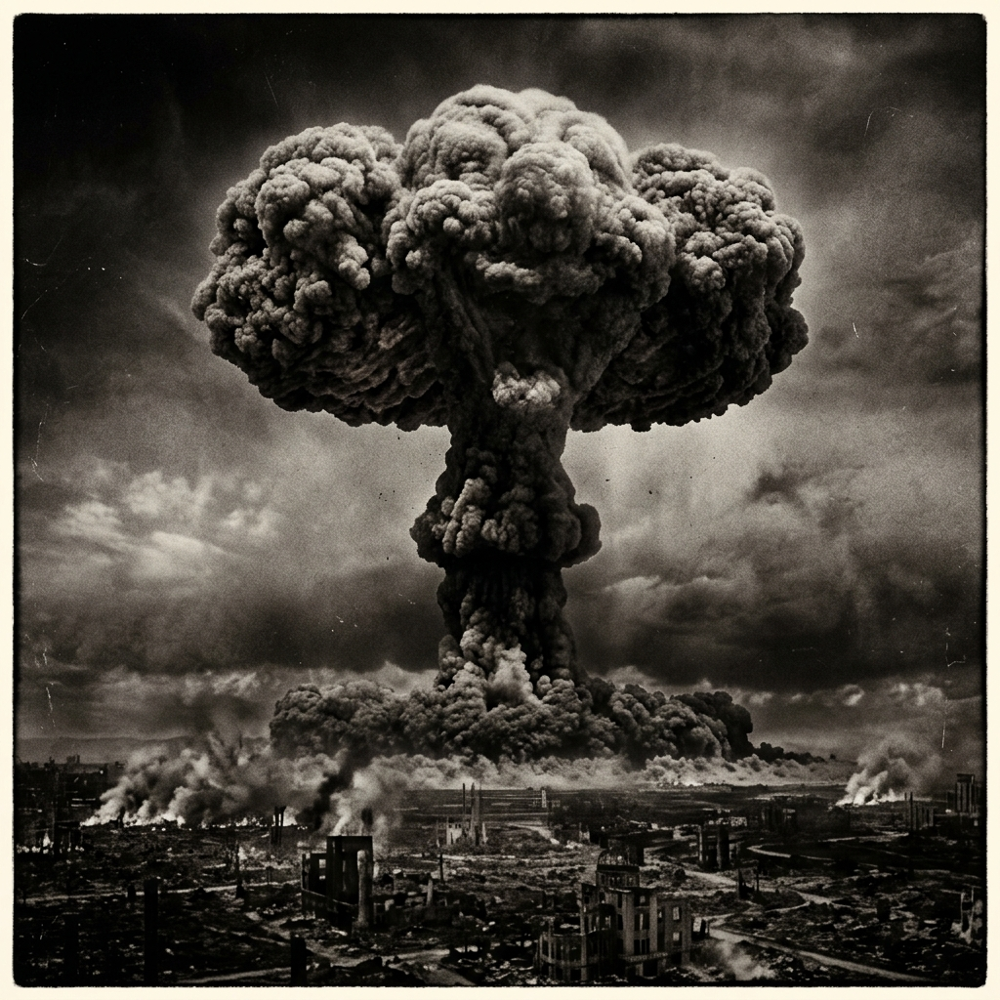

Cargando historia...
El amanecer de la era atómica y la tragedia que cambió la humanidad para siempre

En 1939, Albert Einstein advirtió al presidente Roosevelt sobre el potencial de una bomba atómica. Esto desencadenó el Proyecto Manhattan, un programa secreto que empleó a más de 125,000 personas y costó aproximadamente $2 mil millones de dólares (equivalente a $28 mil millones actuales).
Dirigido por el físico J. Robert Oppenheimer, el proyecto logró la primera detonación nuclear exitosa el 16 de julio de 1945 en la prueba Trinity, Nuevo México. La era atómica había comenzado.
Einstein envía su carta a Roosevelt advirtiendo sobre la fisión nuclear
Se establece oficialmente el Proyecto Manhattan bajo el Cuerpo de Ingenieros del Ejército
Prueba Trinity: primera detonación nuclear exitosa en Alamogordo, Nuevo México
Declaración de Potsdam: ultimátum a Japón exigiendo rendición incondicional
Japón rechaza la Declaración de Potsdam. Se autoriza el uso de armas atómicas
El bombardero B-29 "Enola Gay", pilotado por el coronel Paul Tibbets, lanzó "Little Boy" sobre el centro de Hiroshima. La bomba detonó a 580 metros de altitud sobre el Hospital Shima, generando una bola de fuego con temperaturas superiores a 1 millón de grados Celsius.
La onda expansiva viajó a 1,000 km/h, destruyendo todo en un radio de 1.6 kilómetros. La radiación térmica causó quemaduras letales hasta a 3.5 km del epicentro. El "kuroi ame" (lluvia negra) cayó durante horas, contaminando agua y alimentos con material radiactivo.
Tres días después de Hiroshima, el B-29 "Bockscar", pilotado por el mayor Charles Sweeney, despegó con destino a la ciudad de Kokura. Sin embargo, la nubosidad obligó a cambiar el objetivo al blanco secundario: Nagasaki.
A las 11:02 AM, "Fat Man" detonó a 503 metros de altitud sobre el valle de Urakami. Con una potencia de 21 kilotones, la explosión fue más poderosa que la de Hiroshima, pero la topografía montañosa de Nagasaki confinó parcialmente la onda expansiva.
Aproximadamente 40,000 personas murieron instantáneamente y otras 40,000 más fallecerían en los meses siguientes. La catedral de Urakami fue completamente destruida.
Los sobrevivientes, conocidos como hibakusha (被爆者), sufrieron discriminación social, enfermedades por radiación, leucemia y cáncer durante décadas. Japón reconoce oficialmente a más de 650,000 hibakusha.
El 15 de agosto de 1945, el emperador Hirohito anunció la rendición incondicional de Japón. La firma formal se realizó el 2 de septiembre a bordo del USS Missouri.
Los bombardeos iniciaron la Guerra Fría y una carrera armamentística nuclear. En su punto máximo, los arsenales mundiales superaron las 70,000 ojivas nucleares.
La Comisión ABCC documentó efectos a largo plazo: aumento del 46% en leucemia, cataratas, trastornos tiroideos, y efectos psicológicos profundos en generaciones posteriores.
"Ahora me he convertido en la Muerte, el destructor de mundos."— J. Robert Oppenheimer, citando el Bhagavad Gita
El Parque Memorial de la Paz de Hiroshima, Patrimonio UNESCO desde 1996, recibe más de 1 millón de visitantes anuales.
El Tratado sobre la Prohibición de las Armas Nucleares (TPNW) entró en vigor en 2021, pero las potencias nucleares aún no lo han ratificado.
Sadako Sasaki, hibakusha de 2 años, murió de leucemia a los 12. Su historia de las 1,000 grullas de papel se convirtió en símbolo mundial de paz.
平和 — Heiwa — Paz